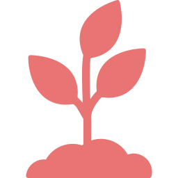

Visão Geral da Unidade 1
Monitoramento em tempo real
Leituras atualizadas automaticamente
Resumo semanal da unidade
Comparativo com a semana passada
UMIDADE DO SOLO
62%▲ +2%
2% mais úmido que semana passada
UMIDADE DO AR
86%▲ +1%
1% mais úmido que semana passada
TEMPERATURA
18°C▲ +0,5°C
3% mais quente que semana passada
Câmaras da unidade
| Câmara | Fase | Status |
|---|---|---|
| Câmara 01 | Incubação | Ideal |
| Câmara 02 | Frutificação | Atenção |
| Câmara 03 | Colonização | Ideal |
Alertas recentes
3- Umidade do substrato abaixo de 60% (59,9%)
- Sensor da estufa desconectado temporariamente
- Umidade do ar na faixa ideal
Câmara 02
Fase atual: frutificaçãoTemperatura
17,4°C
dentro da faixa (16–22°C)
Umidade do ar
87,3%
dentro da faixa (80–90%)
Umidade do substrato
59,9%
fora da faixa (60–80%)

Histórico de leituras (Câmara 02)
Temperatura (°C)Dentro da faixa
Umidade do ar (%)Dentro da faixa
Umidade do substrato (%)Fora da faixa